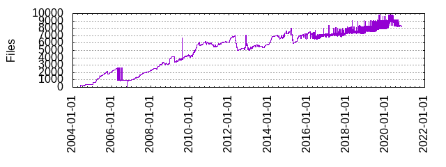

Files
- Total files
- 8224
- Total lines
- 1604966
- Average file size
- 6006.06 bytes

| Extension | Files (%) | Lines (%) | Lines/file |
|---|
| 1300 (15.81%) | 65524 (4.08%) | 50 |
| 19 | 31 (0.38%) | 16556 (1.03%) | 534 |
| 32 | 2 (0.02%) | 22 (0.00%) | 11 |
| 4 | 62 (0.75%) | 27883 (1.74%) | 449 |
| 64 | 2 (0.02%) | 22 (0.00%) | 11 |
| S | 16 (0.19%) | 1485 (0.09%) | 92 |
| SDK | 1 (0.01%) | 11 (0.00%) | 11 |
| TOOLCHAIN | 1 (0.01%) | 2 (0.00%) | 2 |
| am | 1 (0.01%) | 28 (0.00%) | 28 |
| asnet | 1 (0.01%) | 3 (0.00%) | 3 |
| awk | 2 (0.02%) | 125 (0.01%) | 62 |
| bin | 6 (0.07%) | 1004 (0.06%) | 167 |
| bootscript | 6 (0.07%) | 135 (0.01%) | 22 |
| builtin | 1 (0.01%) | 1 (0.00%) | 1 |
| c | 432 (5.25%) | 236882 (14.76%) | 548 |
| cc | 1 (0.01%) | 1896 (0.12%) | 1896 |
| cfg | 7 (0.09%) | 93 (0.01%) | 13 |
| chat | 2 (0.02%) | 29 (0.00%) | 14 |
| cobalt | 1 (0.01%) | 10 (0.00%) | 10 |
| common | 1 (0.01%) | 170 (0.01%) | 170 |
| conf | 19 (0.23%) | 205 (0.01%) | 10 |
| config | 22 (0.27%) | 4653 (0.29%) | 211 |
| default | 4 (0.05%) | 83 (0.01%) | 20 |
| defaults | 2 (0.02%) | 55 (0.00%) | 27 |
| diff | 1 (0.01%) | 19 (0.00%) | 19 |
| dts | 978 (11.89%) | 111022 (6.92%) | 113 |
| dtsi | 217 (2.64%) | 35629 (2.22%) | 164 |
| e500 | 1 (0.01%) | 6 (0.00%) | 6 |
| failsafe | 2 (0.02%) | 23 (0.00%) | 11 |
| fw | 3 (0.04%) | 11 (0.00%) | 3 |
| gcom | 11 (0.13%) | 290 (0.02%) | 26 |
| ggo | 1 (0.01%) | 46 (0.00%) | 46 |
| guess | 1 (0.01%) | 1486 (0.09%) | 1486 |
| h | 316 (3.84%) | 88296 (5.50%) | 279 |
| hotplug | 8 (0.10%) | 43 (0.00%) | 5 |
| in | 76 (0.92%) | 16942 (1.06%) | 222 |
| inc | 1 (0.01%) | 2437 (0.15%) | 2437 |
| init | 29 (0.35%) | 3648 (0.23%) | 125 |
| initd | 1 (0.01%) | 16 (0.00%) | 16 |
| json | 6 (0.07%) | 217 (0.01%) | 36 |
| l | 1 (0.01%) | 525 (0.03%) | 525 |
| lds | 12 (0.15%) | 292 (0.02%) | 24 |
| leon | 1 (0.01%) | 6 (0.00%) | 6 |
| local | 1 (0.01%) | 4 (0.00%) | 4 |
| m4 | 35 (0.43%) | 4236 (0.26%) | 121 |
| md | 3 (0.04%) | 183 (0.01%) | 61 |
| microsoft | 1 (0.01%) | 80 (0.00%) | 80 |
| mk | 297 (3.61%) | 40950 (2.55%) | 137 |
| n32 | 2 (0.02%) | 22 (0.00%) | 11 |
| options | 1 (0.01%) | 194 (0.01%) | 194 |
| pa | 1 (0.01%) | 35 (0.00%) | 35 |
| patch | 3990 (48.52%) | 905888 (56.44%) | 227 |
| pl | 20 (0.24%) | 7988 (0.50%) | 399 |
| pm | 1 (0.01%) | 312 (0.02%) | 312 |
| pptp | 1 (0.01%) | 7 (0.00%) | 7 |
| py | 13 (0.16%) | 1947 (0.12%) | 149 |
| qca4019 | 17 (0.21%) | 191 (0.01%) | 11 |
| qca9888 | 3 (0.04%) | 36 (0.00%) | 12 |
| qca9984 | 2 (0.02%) | 14 (0.00%) | 7 |
| rpath | 1 (0.01%) | 666 (0.04%) | 666 |
| scr | 1 (0.01%) | 6 (0.00%) | 6 |
| script | 3 (0.04%) | 414 (0.03%) | 138 |
| sh | 190 (2.31%) | 21222 (1.32%) | 111 |
| specs | 1 (0.01%) | 2 (0.00%) | 2 |
| squashfs | 1 (0.01%) | 0 (0.00%) | 0 |
| sub | 1 (0.01%) | 1790 (0.11%) | 1790 |
| supp | 1 (0.01%) | 42 (0.00%) | 42 |
| svg | 1 (0.01%) | 610 (0.04%) | 610 |
| txt | 37 (0.45%) | 668 (0.04%) | 18 |
| upgrade | 2 (0.02%) | 2 (0.00%) | 1 |
| usb | 2 (0.02%) | 56 (0.00%) | 28 |
| usbmisc | 1 (0.01%) | 28 (0.00%) | 28 |
| user | 2 (0.02%) | 18 (0.00%) | 9 |
| version | 2 (0.02%) | 43 (0.00%) | 21 |
| y | 1 (0.01%) | 727 (0.05%) | 727 |